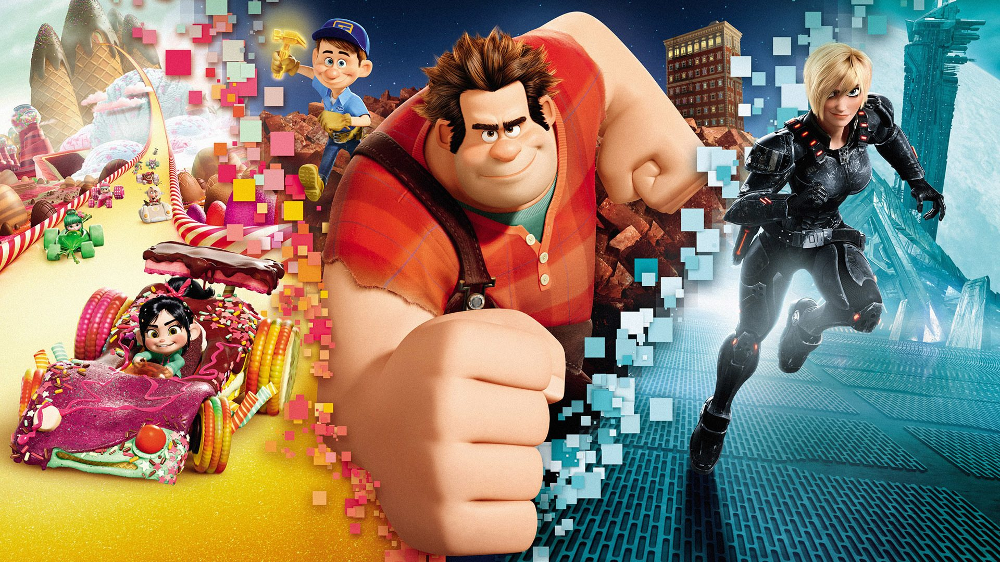

About Ralph
Ralph is awesome. He's a 8-bit videogame bad guy who travels the length of the arcade to rpove that he's a good guy.
Ralph and his friends
Ralph's Characteristics
- He's got big hands
- He's treated as bad-ass
- He's trying to be a good guy
Ralph's Friends
Ralph has some awesome friedns. I think his best friend is Glitch. She's awesome. Click on the link below to read more about them.